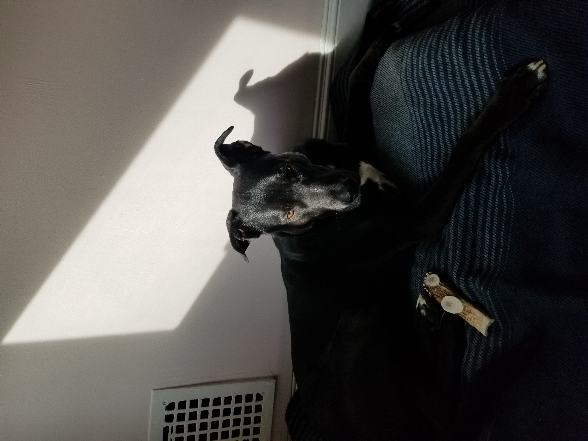
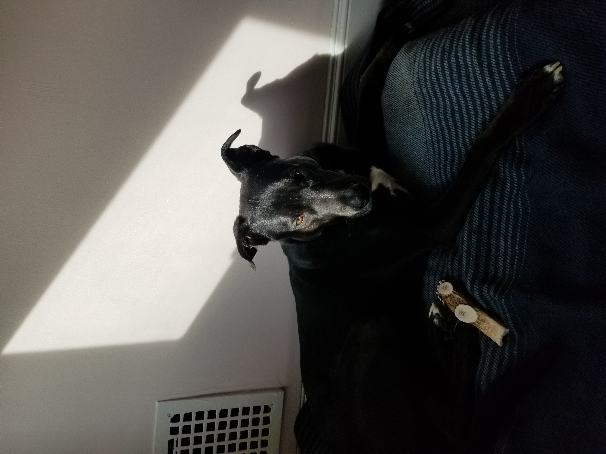

About Me - Timothy Flucker
Hello! Thanks for stopping by to learn more about me! My name is Timothy Flucker and I am a developer based out of Washington DC and I currently work as a Consultant for Deloitte as a Software Developer. I have been in the IT consulting workforce since 2014 and I have worked for other consulting firms such as Accenture Federal Services and Atlas Consulting. I describe myself as a Full-Stack Developer with more of a focus on back-end development and I have been primarily been working with federal agencies such as USPS, CISA (subset of DHS), and IRS. Currently, I am working on a contract with Raytheon as a developer on their support team which is responsible for multiple applications. The tech stack I am most comfortable with uses the following programming languages and frameworks:
Professional Technology Preferences
| Component | Purpose |
| Java 8 / Java 11 | Server-side Programming Language which translates user input into some action to retrieve, add, update, or delete data. Java 8 introduces some really cool 'streaming' capabilities which enhance the programming languages ability to interact with lists, maps, and other data structures efficiently. |
| Spring MVC Framework | An extremely popular Java-based framework for create Java applications. It can handle project setup and instantiation through pre-defined Java Beans and is extremely useful when developing an application with API microservices. Extremely adaptable and usable with almost every kind of database. |
| SQL | Popular language to create and interact with databases. |
| HTML + CSS3 + JavaScript/JQuery | Languages used for front-end development. This combination allows for developers to build responsive web applications which can be the user-friendly interface for the Java back-end development. |
Personal Interests
My personal interests are a little nerdy, but they always keep me entertained and happy! I really enjoy reading, cooking, video games (RPG and Strategy), playing Dungeons and Dragons, and also spending time with my beautiful wife, Sydney, and my dog, Lincoln. My wife got married in September of 2021 and just celebrated our first anniversary together, and we are getting ready for our honeymoon in Vietnam in February 2023. Prior to getting married we had been dating since 2015 and we started living together in 2018. My wife has been so incredibly supportive of me while I have been working on my Masters program, I definitely could not have done this without her!
 


Our dog, Lincoln, is a 4 year old German Shepard / Staffordshire Terrier mix we fostered and adopted in 2019 and now we can't imagine life without him. When we got him he had severe hip joint problems which impacted his ability to walk, play, and enjoy life. He was able to receive some surgeries in 2020 which completely changed his life and made him the happy, lovable, and friendly dog that our friends and family know and love. At 80lbs, he has a lot of love and energy but he is the perfect dog to cuddle up with after a long day at work and isn't afraid to give kisses and ask for belly rubs.